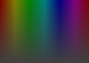
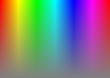
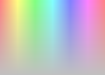

CNxHLSColor クラスは、HLS 色空間による色の操作をサポートするクラスです。CNxColor クラスと同様に NxColor への変換演算子を持っているため、RGBA カラーの CNxColor クラスと同様に扱えます。CNxHLSColor クラスは、RGBA カラーを直接扱うクラスではないため、CNxColor クラスの様に RGB それぞれの値を独立して操作する事はできません。
HLS 色空間では色相(Hue)、明度(Lightness)、彩度(Saturation)によって色を指定します。CNxHLSColor クラスの場合、色相は 0 〜 359、明度と彩度は 0 〜 255 の範囲です。
Hue は、青や赤と言った色合い(色の系統)です。0 は赤、120 は緑、240 では青となります。
Lightness は、明るさを指定します。値が小さい場合は暗く、逆に大きくすると白くなります(255 では真っ白)。
Saturation は、色の鮮やかさです。255 では最も鮮やかな色、値を小さくすると鮮やかさが失われてモノクロに近くなります。
以下の表は、横方向へ色相を最低値(0)から最高値(359)まで、縦方向へ彩度を最高値から最低値まで変化させたものです。
| Lightness = 64 | Lightness = 128 | Lightness = 192 | Lightness = 255 |
|---|---|---|---|
|  |  |  |
CNxHLSColor へ設定された NxColor はその時点で HLS へ変換されます。逆に、NxColor を取り出す時は HLS からの変換が行われます。CNxHLSColor クラスで保持しているのは HLS だけです。HLS と RGB は一対一で対応していないのと、変換に多少の誤差があるため、何度も変換を繰り返すと色が失われます(特に色相)。
このページの最初 / クラスメンバ / NxDraw ライブラリ クラス階層図| CNxHLSColor() | コンストラクタ |
設定
| SetNxColor() | NxColor を設定 |
| SetHLS() | HLS 値を設定 |
| SetHue() | Hue を設定 |
| SetLightness() | Lightness を設定 |
| SetSaturation() | Saturation を設定 |
| SetAlpha() | アルファの値を設定 |
| SetColorRef() | COLORREF 値を設定 |
取得
| GetNxColor() | NxColor を取得 |
| GetHue() | Hue を取得 |
| GetLightness() | Lightness を取得 |
| GetSaturation() | Saturation を取得 |
| GetAlpha() | アルファの値を取得 |
| GetColorRef() | COLORREF 値を取得 |
| operator NxColor() | NxColor への変換演算子 |
CNxHLSColor クラスのコンストラクタ
| NxColor nxColor | NxColor 型の RGBA 値 |
| WORD wHue | 色相(0 〜 359) |
| BYTE byLightness | 明度(0 〜 255) |
| BYTE bySaturation | 彩度(0 〜 255) |
| BYTE byAlpha | アルファの値(0 〜 255) |
引数がない最初の形式は、HLS とアルファ値を全てゼロで初期化します。
2番目の形式は、NxColor 型の RGBA 値 を HLS へ変換して設定します。
3番目の形式は、HLS の各値へ引数を設定します。
NxColor 型の RGBA 値を HLS へ変換して設定します。
| NxColor nxColor | NxColor 型の RGBA 値 |
自分自身への参照を返します。
HLS 全てとアルファの値を設定します。
| WORD wHue | 色相(0 〜 359) |
| BYTE byLightness | 明度(0 〜 255) |
| BYTE bySaturation | 彩度(0 〜 255) |
| BYTE byAlpha | アルファの値(0 〜 255) |
自分自身への参照を返します。
Hue、Lightness および Saturation と、アルファの値を設定します。
Hue (色相)の値を設定します。
| WORD wHue | 色相(0 〜 359) |
自分自身への参照を返します。
Lightness (明度)の値を設定します。
| BYTE byLightness | 明度(0 〜 255) |
自分自身への参照を返します。
Saturation (彩度)の値を設定します。
| BYTE bySaturation | 彩度(0 〜 255) |
自分自身への参照を返します。
アルファの値を設定
| BYTE byAlpha | 設定するアルファの値(0 〜 255) |
自分自身への参照を返します。
COLORREF 値を HLS へ変換して設定します。
| COLORREF crColor | 設定する COLORREF 値 |
自分自身への参照を返します。
GDI で使用される COLORREF 値を、HLS へ変換して設定します。アルファの値は 255 になります。
HLS を NxColor 型の RGBA 値へ変換して返します。
なし
変換された NxColor を返します。
Hue (色相)の値を取得します。
なし
Hue の値を返します。
Lightness (明度)の値を取得します。
なし
Lightness の値を返します。
Saturation (彩度)の値を取得します。
なし
Saturation の値を返します。
アルファの値を設定
なし
アルファの値を返します。
COLORREF 値を取得
なし
COLORREF 値を返します。
HLS を COLORREF 値へ変換して返します。アルファの値は無視され、返される COLORREF の最上位バイトは常にゼロになります。
CNxHLSColor オブジェクトを NxColor へ変換して返します。
なし
NxColor 値
この演算子は HLS を RGBA へ変換して返します。